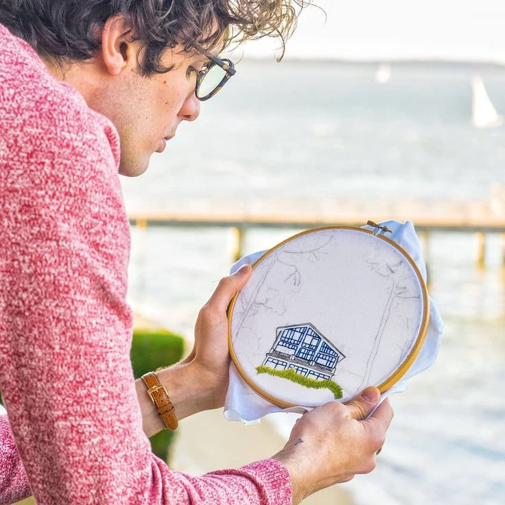
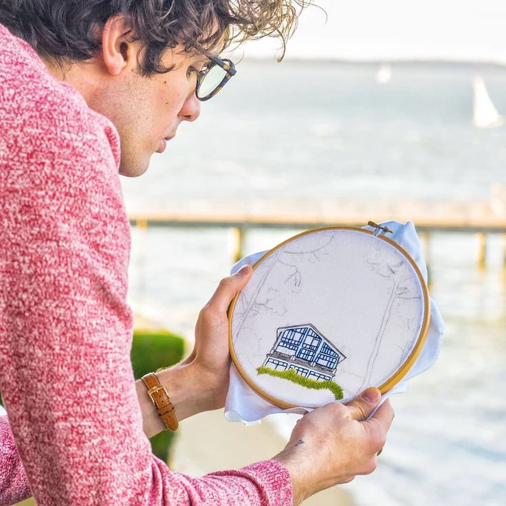

Вот я, вяжущий спицами и вышивающий крестиком мужчина и увлекаюсь этим хобби уже 15 лет. Картин не много, но вышиты они, в определенный цикл моего жизненного пути и с каждой связано какое-то событие.
Да, я не создаю вышивку с нуля, не разрабатываю дизайны, но тем не менее, каждый мной вышитый набор - чем-то дорог.
 
